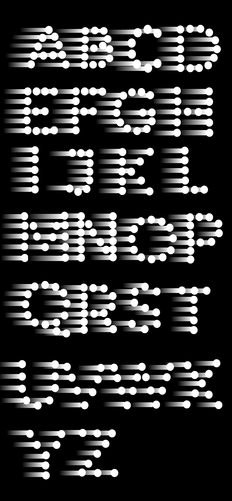

Process
The Goal
- Create a typeface that explores what it means to make a typeface for the screen versus the printed page.
- Express a message using the formal qualities of the typeface.
- Create a website that uses this font as the primary means of communication that supports your message.
Objectives
- support a clear message
- be interactive and explore internet related tropes
- affect the user emotionally or intellectually through the interaction
- be visually interesting & beautiful
- be built with with html, css & jquery
Brainstorming a Message
The dynamic quality of the internet is altering our perception of time
As time passes, our actions leave a trail of consequences whether we are paying attention or not. The internet has made us more present-hedonistic. We tend to ignore the future consequences of our behavior. We are less patient and more impulsive.
Interaction 1: the faster that the user types, the less legible the text appears. This forces the audience to think more about what they are posting. emotion evoked - frustration
Interaction 2: the user can only type one letter at a time and can never see the whole message, somehow your past narrow decisions actions affect your future. emotion evoked - frustration
Interaction 3: the user cannot undo what they have typed and must endure the consequences of their quick, thoughtless typing. emotion evoked - frustration. challenges our habit and ability to editing text on the internet. And draws attention to how much that we do edit.
The internet is altering our perception of ourselves
The internet makes us very self-aware. We carefully craft our internet selves. Just like content on the internet, we believe that our identities are fluid and we can and must brand ourselves. In a way, we care more about appearing a certain way than actually aquiring that characteristic.
Interaction 1: the user is instructed to type in thier name. The longer that they stay on the page, the more distorted the text becomes, until it is completely unreadable.
The anonymity of internet is altering our ideas of privacy
We willingly give up personal information on the internet through social media. Could there be any negative consequences as we divulge our personal information on the internet? Is privacy even important anymore?
Interaction 1: the website records as much information that it can about the user while they are on the s-top-white and displays it on the screen.
Interaction 2: the user can type in some text and sumbit it to the page. It then dissolves and disappears. Every once and a while, text will fade into focus.
Early Sketches of the Letterforms
Website Brainstorming
The typeface will be displayed at a very large scale, with just a hint of the last letter that they typed.
This mirrors the idea that due to the internet we focus more and more on the present, causing us to make careless mistakes. Typing without being able to delete mistyped letters and see the words and sentence that you are typing, should frustrate the user. It hopefully will force the user to realize that they need to slow down and think a bit more carefully before they type each letter.
The user will then be able to 'look back' at the consequences of their careless typing. The text that they typed will be displayed, repeating each second. This will emphasis the fact that our actions have an multiplying effect over time, especially over the internet as content can be retweeted, posted, linked, and shared. The user will be able to control the path of text, sybolizing how we can manipulate the way that we and other people perceive our past decisions but we can't edit them.
Coding the Alphabet
I decided to choose this look for the typeface because it's simplicity worked best with my concept for the website and it had a digital computer-y feeling to it. It sort of feels like a relative of the OCR-A typeface.